Portable C++20 analytical engine. Runs in Python, Node, the browser, or as a single binary. Reads Parquet, CSV, JSON, Avro, Arrow, SQLite, and Excel natively. On a 5-query warm JOIN batch: 138 ms vs DuckDB's 540 ms — 3.9× faster.
Same embedded model as DuckDB and SQLite. Link it in, point SQL at files on disk. The defaults are different.
Install with pip install slothdb and you're running. Point SQL at a file: no CREATE TABLE, no COPY FROM, no extension to load first.
130+ SQL features: joins, CTEs, recursive queries, window functions, QUALIFY, MERGE, aggregates, set operations, DESCRIBE, PRAGMA table_info, VARCHAR(n) enforcement, CREATE LIVE VIEW with incremental CSV append. Seven file formats built in, no extensions needed.
Vectorized columnar engine, morsel-driven parallelism, typed streaming scans, typed int64 JOIN hash path. On a 5-query warm JOIN batch: 138 ms vs DuckDB's 540 ms — 3.9× faster.
Read moreReleased under the MIT license. Use in commercial products, embed in desktop apps, redistribute freely. Source on GitHub, developed in the open.
Read moreA single ~8 MB binary. Runs on Windows, Linux, macOS, across x86_64 and arm64. Links into Python, C, C++. An -DSLOTHDB_EDGE=ON build option strips the engine to CSV / JSON / Parquet for sub-megabyte WASM bundles that fit under Cloudflare Workers' 1 MB cap.
Stable C ABI for third-party extensions. Numeric error codes that never change. Extensions built for v0.1 keep working on v1.0, v2.0, and beyond. Unlike DuckDB's internal C++ API.
Read moreSlothDB ships with native file format readers, native clients, and runs on every major platform.
No files to find. Demo generates a 100 000-row CSV, runs three queries, prints side-by-side timing against DuckDB on your own machine.

1M-row dataset · warm cache · 5-run median · same machine · same queries.
| Format | Query | SlothDB | DuckDB | Speedup |
|---|---|---|---|---|
| CSV | COUNT(*) | 33 ms | 170 ms | 5.08× |
| CSV | GROUP BY region | 100 ms | 191 ms | 1.91× |
| CSV | WHERE + GROUP BY | 107 ms | 194 ms | 1.81× |
| CSV | big × small JOIN + COUNT(*) | 85 ms | 212 ms | 2.49× |
| Parquet | COUNT(*) | 12 ms | 34 ms | 2.83× |
| Parquet | SUM(revenue) | 46 ms | 48 ms | 1.04× |
| Parquet | GROUP BY region | 76 ms | 88 ms | 1.16× |
| JSON | SUM(revenue) | 242 ms | 314 ms | 1.30× |
| Avro | SUM(revenue) | 140 ms | 760 ms | 5.43× |
| Avro | GROUP BY region | 170 ms | 800 ms | 4.71× |
| Excel | GROUP BY region | 2.5 s | 3.56 s | 1.41× |
Single binary. No runtime dependencies. Pick a client.
Full SlothDB engine as a pip-installable package. Connection API, pandas integration, context manager support.
pip install slothdb
python -c "import slothdb; slothdb.demo()"
WebAssembly build — works in Node ≥18 and every modern browser. 1.3 MB wasm, zero native deps. Try it live.
npm install @slothdb/wasm import { SlothDB } from '@slothdb/wasm'; const db = await SlothDB.create(); db.query("SELECT 1 AS n");
Prebuilt SlothDB shell for Linux (x86_64 / arm64), macOS, and Windows. No runtime dependencies.
# Linux / macOS curl -fsSL https://raw.githubusercontent.com/\ SouravRoy-ETL/slothdb/main/install.sh | bash # Windows: grab slothdb.exe from # github.com/SouravRoy-ETL/slothdb/releases
Clone, CMake, and build. Produces a shared library, static library, and CLI binary.
git clone https://github.com/SouravRoy-ETL/slothdb cd slothdb cmake -B build -DSLOTHDB_BUILD_SHELL=ON cmake --build build --config Release